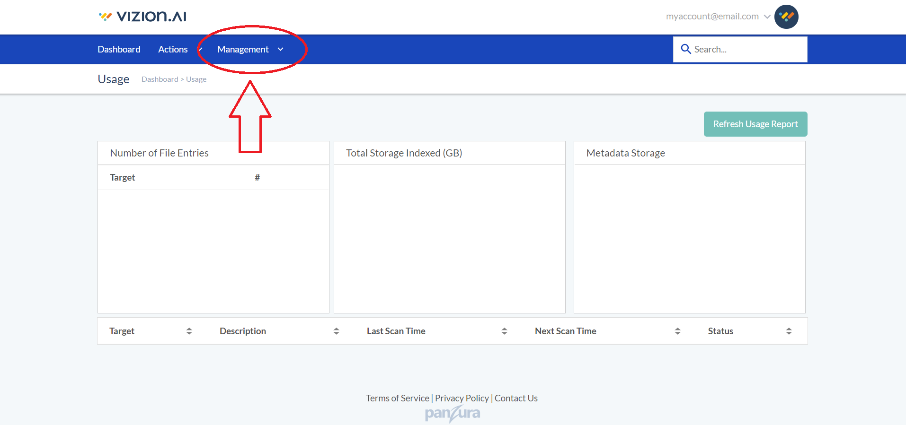
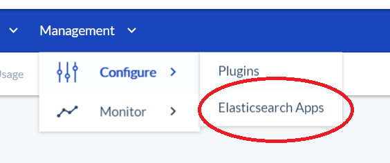
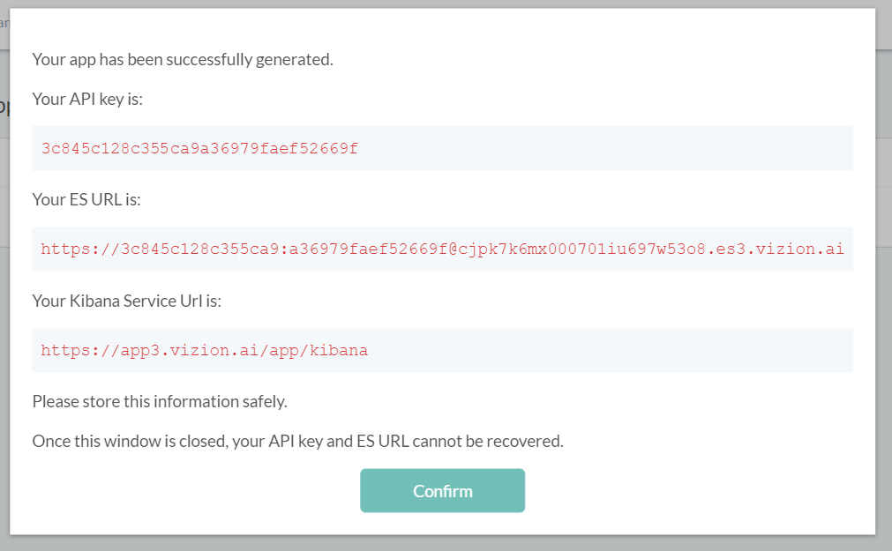
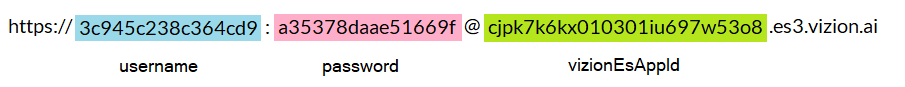
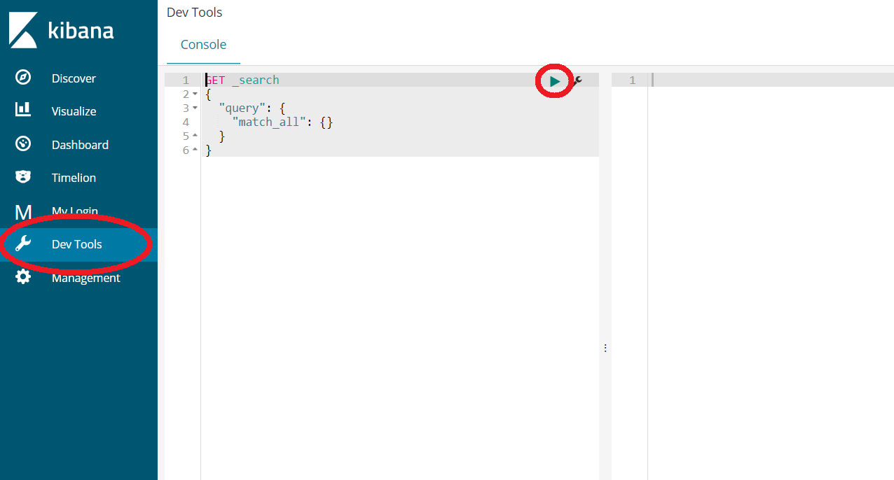

1) Create Vizion Account
Sign up for your vizion account here.
note: You are required to use a business email address and won't to be allowed to sign up with an address that uses a common personal email domain, such as gmail.com.
2) Generate New ES App
From your account dashboard, navigate to:
Management > Configure > Elasticsearch Apps
 3) App Credentials
When your ES app is successfully created, you should see the following:
Copy and save each of the fields here, as this will be the only time they are given to you. Note that the field labeled 'ES URL' can be broken down into parts that will be later used for your Filebeat config and to log into Kibana. You may want to save these individual parts as well.
4) Test ES Connectivity by Logging In to Kibana
Go to https://app3.vizion.ai/app/kibana or to the Kibana URL given to you with your credentials, if different.
Your logion username and password are derived from the 'ES URL' given to you upon creation of your ES app in Vizion.ai. See previous section for instructions.
Once in, use the left bar to navigate to 'Dev Tools', then click the green arrow next to 'GET _search' in the main panel. This sends a query for all of your ES data.
A successful query should send some JSON data that includes "timed_out" : false.
You may want to take some time to play with this window to learn how Elasticsearch queries are structured. Try adding some data and then querying it.
5) Download and Install Filebeat
Filebeat is a tool that lives on your webserver and automatically sends log data to Elasticsearch, allowing you to work with and (with Kibana) visuaize your data.
Enter the following commands into your webserver terminal:
1.
curl -L -O https://artifacts.elastic.co/downloads/beats/filebeat/filebeat-6.5.3-x86_64.rpm
2.
sudo rpm -vi filebeat-6.5.3-x86_64.rpm
6) Filebeat Configuration File
Filebeat is configured using a YAML file. To quickly connect to your vizion.ai app, on your webserver, open the file called 'filebeat.yml', located inside the folder'/etc/filebeat'.
To do this, first give yourself permissions: sudo su
Then open it: nano /etc/filebeat/filebeat.yml
Enter your vizion.ai elasticsearch url below and click the button to generate the contents of a new 'filebeat.yml'. Replace the text in your webserver .yml file with this.
Once you've pasted this in, 'Ctrl + 'X' to exit and 'y' to save to 'filebeat.yml', then enter
sudo service filebeat start
and you should get an: [ OK ]
If you instead get: [FAILED] , double-check your file to make sure you have copied everything correctly and that it follows proper YAML syntax.
8) Check Filebeat Connectivity
Check the filebeat logs with nano /var/log/filebeat/filebeat
or tail -f /var/log/filebeat/filebeat
If the logs indicate that there are no errors and that filebeat is sending data, go to your Kibana site as described in step 4. Query your data and look for indeces that start with 'filebeat-'.
9) Apache2 Plugin for Filebeat
To get data from your Apache server sent to your ES app, you need to install the Apache 2 plugin:
filebeat modules enable apache2
Then enter:
filebeat modules list
and make sure Apache2 is listed as enabled.
If so, you can go to your Kibana console and start working with your data!